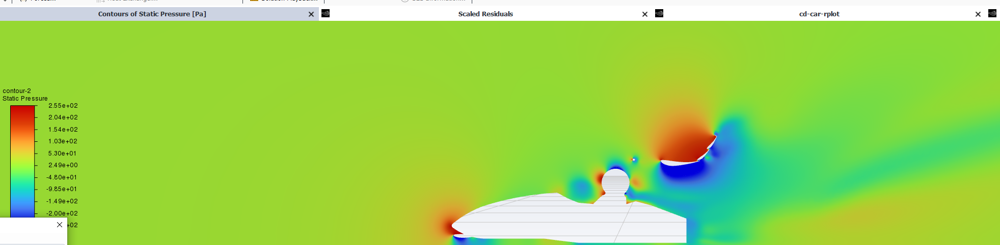

Modeled a simplified FSAE car in SolidWorks for simulating aerodynamics in a wind tunnel setting. Used CAD geometry preparation in Ansys SpaceClaim, Meshing in Ansys Fluent Meshing, and post-processing in Ansys Fluent to find drag, lift, and the flow field around the car.